Breaststroke This is considered the oldest style there is. It consists of the athlete being with the chest facing down and makes a movement where he pushes the two arms forward at the same time and then opens them, simultaneously doing the same with the legs. The easiest way to understand it is to imagine open and close scissor Source: https://sportsregras.com/en/swimming-history-rules/
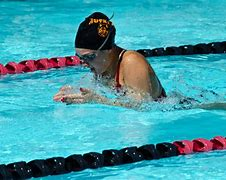Backstroke or back crawl is one of the four swimming styles used in competitive events regulated by FINA, and the only one of these styles swum on the back. This swimming style has the advantage of easy breathing, but the disadvantage of swimmers not being able to see where they are going. It also has a different start from the other three competition swimming styles. The swimming style is similar to an upside down front crawl or freestyle. Both backstroke and front crawl are long-axis strokes. In individual medley backstroke is the second style swum; in the medley relay it is the first style swum.
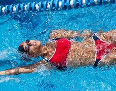The butterfly (colloquially shortened to fly[1]) is a swimming stroke swum on the chest, with both arms moving symmetrically, accompanied by the butterfly kick (also known as the "dolphin kick"). While other styles like the breaststroke, front crawl, or backstroke can be swum adequately by beginners, the butterfly is a more difficult stroke that requires good technique as well as strong muscles. It is the newest swimming style swum in competition, first swum in 1933 and originating out of the breaststroke.[2]
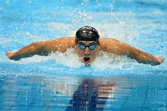History of the Freestyle Stroke . The freestyle swimming stroke was thought to haveoriginated in Australia which is partially true.The stroke used to be called the “Australian Crawl”because competitive swimmers from Australia werewinning events with this stroke.It is said the freestyle was originally from the pacificislands possibly the Solomon’s
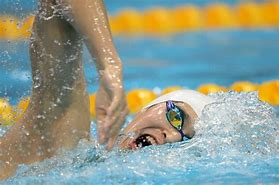1. Let go of your fear. A lot of people put off learning how to swim because they're afraid of drowning. While drownings do occur, most of them could have been prevented by simple safety measures.
2. Get used to floating. When you're in the water, hold on to the side of the pool or a dock, and let your legs float out behind you - they should lift easily if you let them. But, for some people, they like to sink to the bottom, while your upper body floats. Don't worry; just retry the method again. Practice doing this on your stomach and on your back, until you're used to letting half of your body float
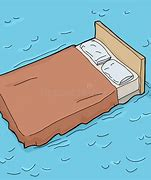3. Don't panic. Always remember that you have a fallback if you're in an unmanageable depth or you simply can't move your limbs - floating on your back. Don't flail around or start breathing quickly if you can't swim; simply lie back as flat as you can, and let the water carry you while you regain your composure.
4. Practice exhaling underwater. While you're still in a shallow depth, take a deep breath and put your face underwater. Slowly exhale out your nose until you're out of breath, then come back up. Bubbles should come out. You can also exhale out of your mouth, but usually in big bubbles until you finally let out a stream of bubbles.
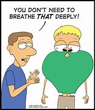5. Wear goggles (optional). Wearing goggles can help you feel more comfortable opening your eyes underwater, and might allow you to see more clearly. Find a pair with spongy circles around the eyes and dip them in the water, so that they'll stick to your skin. Tighten the strap around the back of your head so that the goggles fit snugly
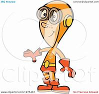6. Practice kicking your legs. Whether you're floating on your back or still holding on to the side of the pool, you can practice kicking. (To see how far each kick can propel you, practice it using a kickboard. This allows you to focus on your kicking technique without worrying about keeping your head above water.)
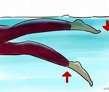7. Learn how to do a crawl. Crawls are great strokes to learn as a beginner, and they'll move you pretty quickly.
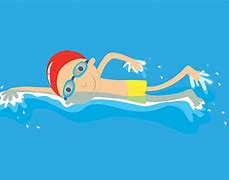 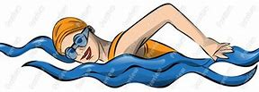8. Tread water. Treading water can help you catch your breath and keep your head up without actually swimming. Do the eggbeater kick listed above, and use your hands to keep your balance by "sculling" - keep your forearms flat on the surface of the water, and imagine they're butter knives spreading on a piece of toast. Move one arm in a clockwise circle, and the other arm in a counterclockwise circle
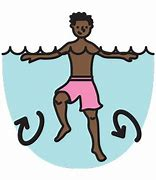9. Use your arms to come up from the bottom. If you're below water and would like to come up, use your arms to propel yourself. Put them straight up above your head, and quickly bring them down to your sides. This should push you up a few feet. Repeat until you break the surface.
Try some more advanced strokes. Once you're more comfortable in the water, you can start learning new strokes that will move you more quickly or with less energy. Try these: